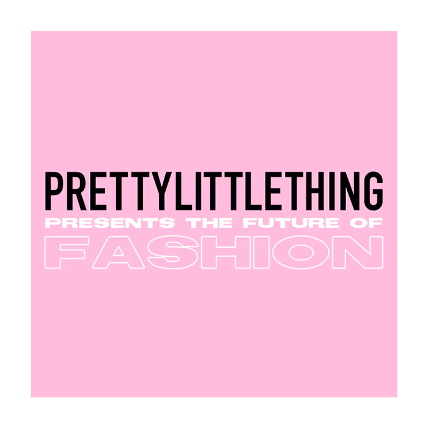

page 2:
page 1
page 3
history of PLT
PLT-PrettyLittleThing  |
PrettyLittleThing was co-founded in 2012 by brothers Umar and Adam Kamani. It first started off as a brand that only sells acsessories with
limited product on the site.Originally launched as an accessories-only website, PrettyLittleThing has fastly sprouted into one of the biggest online
brands for woman clothes, working smartly with celebrities and influencers to build its reputation. PLT is reccomended for women aged 18-24.PLT
operates internationally; envolving the US, Irish, Australian, Middle East, French and Canadian markets.[8][9] The company
sells Womens clothng, footwear, accessories and beauty products. Celebrities including: Miley Cyrus, Michelle Keegan, Rita Ora, Jessie J and Nicki Minaj
were seen wearing their products. In February 2017, the company reported sales of £47.7m. In September 2015, it launched its mobile application
in the UK market.[11] |